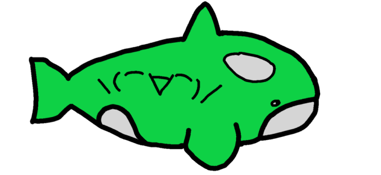

陸上形態(たまに陸に上がるときこのすがた)
陸上形態(たまに陸に上がるときこのすがた)
マスコットキャラクター
グリーンオルカくん

水中形態(いつもはこちらのすがた)
陸上形態(たまに陸に上がるときこのすがた)
いつもは海で泳ぐが、陸に上がりたいときに足がはえてきて二足歩行できるようになる。
モデル:名古屋港水族館のシャチのアース君 (追記2025/8:アース君が今月初めにどこか彼方の海へ泳いでいきました。アース君にはこれまで多くの幸せと感動をもらいました。アース君ありがとう、またどこかで!)

グリーンオルカくん:designed by オルカ
© SAKANA-TO-TORA